O Kosaris
LIVRO TRÊS
O livro de Anthea

O Kosaris
O livro de Anthea
Este é o terceiro livro dos Kosaris e não foi começado por mim.
Começa com catorze páginas que escrevi quando tinha vinte anos, sobre a minha avó Demira e sobre o velho que vinha à padaria às quintas-feiras. Pus essas páginas numa gaveta e não lhes toquei durante cinquenta e dois anos. Quando as voltei a encontrar, pareceram-me demasiado seguras de si. Não alterei nada. Acrescentei-lhes uma frase e a data.
O primeiro livro fala das quatro colunas. O segundo fala da distinção entre aquilo que está estabelecido e aquilo que foi tomado por certo. Este livro fala da questão que está por baixo de tudo isso: como se cria um ser humano para que seja capaz de suportar isso.
Um ser humano não é um ser singular. É uma sobreposição de camadas, pela ordem em que surgiram, e cada camada só pode surgir quando a camada abaixo dela tiver solidificado. Este livro segue essa ordem e não salta nada.
Sete dias. É quanto tempo leva até o ovo saber que vai continuar. Nesses dias, nada entra. Só se cria forma.
Sete meses. O réptil. A criança vive em duas dimensões. Isto não é uma metáfora: um peixe e um lagarto têm os olhos de lado e veem à sua volta, mas os dois olhos não trabalham em conjunto e não existe profundidade. Plano e tudo ao mesmo tempo. Nesses meses, a criança aprende a reger autonomamente as suas funções vitais: respirar, manter-se quente, evitar o perigo. Sem vínculo, sem empatia, sem reconhecimento de si própria — mas intacta e fiável no seu próprio nível. Ao fim de sete meses, essa camada está concluída, e, no entanto, uma criança só nasce geralmente por volta do nono mês. Nesses dois meses, nada de novo se acrescenta. A camada consolida-se. Uma camada não está pronta quando funciona; está pronta quando aguenta.
Sete anos. O mamífero. Os olhos passam a estar voltados para a frente, as duas imagens começam a trabalhar em conjunto e daí nasce a profundidade — a terceira dimensão. E com a profundidade vem o sentimento. Não solidifica como regra nem como conhecimento, mas como uma evidência vivida, e só solidifica junto de uma única pessoa presente que permaneça ali durante anos. O que aqui não solidificar, mais tarde já não solidifica em parte alguma.
O que ainda não pertence a esses sete anos é o tempo. Um mamífero tem reflexos temporais — um ritmo que regressa, fome a uma hora fixa, um cão que está à porta à hora certa — mas não consegue planear. Não consegue saber que amanhã será diferente. Por isso, esses sete anos devem decorrer sem noção do tempo: sem relógio, sem calendário, sem um depois, sem um objectivo para daqui a cinco anos. O que nesses anos deve ser construído é uma base reflexa sem tempo, e ela só surge se mantivermos o tempo do lado de fora.
Depois, o ser humano. Só agora se acrescenta a quarta dimensão: o tempo. A criança consegue pensar no futuro, num dia que ainda não existe, e fazer já alguma coisa por ele. A partir desse momento, pode entrar tudo aquilo que mantivemos de fora durante sete anos, e entra facilmente, porque há algo onde o colocar. O sentimento e o entendimento caminham então lado a lado, até aos catorze e até aos vinte e um anos. Aos catorze, abre-se a capacidade de olhar para o próprio pensamento. Aos vinte e um, o entendimento pode assumir o comando — mas apenas na medida em que exista por baixo dele uma base de sentimentos suficiente para o suportar.
Mas um ser humano tem mais do que quatro direcções. São sete: as três do espaço, o tempo, e ainda o tamanho, o valor e a quantidade. Tamanho é saber quão grande é algo, e não apenas ser capaz de calcular quão grande é. Valor é aquilo que algo vale, independentemente de alguém o medir. Quantidade é ser capaz de sentir que um único caso ainda não é nada e que mil casos já são alguma coisa.
Estas últimas três não são construídas na nossa escolaridade. São-nos retiradas. A escola reduz tudo a uma única medida, chama valor àquilo que cabe na pauta e ensina a fazer contas com números sem alguma vez lhes associar um sentimento. Uma criança sai de lá com quatro direcções e pensa que isso é tudo.
Esta última condição é a razão pela qual este livro existe. Um entendimento sem uma base de sentimentos por baixo não assume o comando. Move-se ao sabor de quem lhe falou por último.
Hoje em dia, a segunda linha surge muito mais tarde na vida, e para muitos nem sequer surge. Não é porque se aprenda menos. É porque se encheram de aprendizagem os anos em que um ser humano devia poder falhar, e porque falta a base de sentimentos onde esses erros pudessem cair. Quem cometeu erros a menos não tem nada sobre que julgar.
Setenta e sete. Não é uma idade em que um ser humano aprenda alguma coisa. É o tempo que passa até aquilo que uma pessoa aprendeu regressar em alguém que não a conheceu.
Fui enfermeira durante quarenta e seis anos. Vi nascer cento e dezanove crianças e não criei nenhuma delas. Isso é uma lacuna neste livro e prefiro dizê-lo de antemão a deixar que alguém o descubra depois.
Onde não sei alguma coisa, isso está indicado.
Parte 1

Onde se conta o que Anthea escreveu aos vinte anos sobre a avó e sobre o velho, e o que acrescentou por baixo cinquenta e dois anos mais tarde.

Eu via cores à volta das pessoas. Durante muito tempo não contei isso a ninguém, porque a minha mãe ficava inquieta e a minha avó não, e era mais fácil estar com a minha avó.
Não sei o que era. Mais tarde estudei-o e nunca encontrei um nome que lhe assentasse. Os médicos têm nomes para isso, mas esses nomes não o abrangem.
O que sei é quando desapareceu. Desapareceu quando eu tinha catorze anos, no Inverno em que o meu avô morreu, e nunca mais voltou.
Passei trinta anos a sofrer por causa disso.
Agora sou velha e penso nisso de outra maneira. Já não penso que tenha perdido alguma coisa. Penso que alguma coisa se acrescentou.
Veio qualquer coisa que observava aquilo que eu via e perguntava se seria mesmo verdade.
Essa coisa nunca mais se foi embora. Ainda está aqui, e neste momento está a olhar para esta frase e a perguntar-me se eu sei realmente isto.
Não tenho a certeza.
Mas, em cinquenta anos, vi acontecer o mesmo a quinze crianças, mais ou menos na mesma idade, e isso não é uma prova, mas também não é nada.
Anthea escreve:Acrescenta-se qualquer coisa que observa. Isso não é o fim da criança. É a segunda camada que se abre.

A minha avó pesava cada saco de farinha. Vi-a fazer isso cinco mil vezes e nunca olhei para aquilo como se olha para algo extraordinário, porque é assim quando somos pequenos.
Eu pensava que pesar fazia parte de fazer pão.
Ela nunca me explicou por que o fazia. Nunca me disse que era importante ou que eu devia lembrar-me disso.
Ela pesava e eu ficava ao lado dela.
Quando tinha dezassete anos e comecei a trabalhar na clínica, no meu primeiro dia contei as garrafinhas do armário, e a enfermeira perguntou-me por que o fazia, e eu disse que não sabia.
Eu não sabia.
Só muito mais tarde percebi que isso vinha da padaria.
O que aprendi com isso é o mais desagradável de todo este livro: aquilo que a minha avó me ensinou de mais importante, nunca mo ensinou.
Fê-lo quando eu estava presente.
Tudo o que ela me explicou em palavras, com a intenção de que eu o recordasse, esqueci.
Anthea escreve:Uma criança não absorve aquilo que dizemos. Absorve aquilo que fazemos enquanto dizemos outra coisa.

O velho vinha à padaria às quintas-feiras e eu estava lá muitas vezes, porque gostava de estar lá.
Fazia sempre a mesma pergunta, e fazia-a sempre de maneira diferente.
Nunca perguntava o que eu sabia. Perguntava como é que eu o sabia.
Quando tinha oito anos, isso aborrecia-me, porque eu queria contar o que sabia, e era muito.
Quando tinha onze anos, comecei a pensar nisso de antemão. Pensava no que responderia se ele perguntasse, e por isso comecei a olhar de maneira diferente para aquilo que via.
Era isso que ele fazia. Nunca me ensinou nada. Durante três anos fez-me a mesma pergunta, até eu própria começar a fazê-la antes de ele entrar.
E então deixou de o fazer.
Mais tarde, quando tinha dezanove anos, perguntei-lhe porquê. Perguntei-lhe por que tinha parado.
Ele disse: "Porque agora já a tens."
Eu disse-lhe então que ele podia tê-lo dito. Teria poupado muito tempo.
Ele disse que isso não era verdade, e tinha razão, e levei ainda outros vinte anos a perceber porquê.
A uma pergunta que nos fazem, podemos responder.
Uma pergunta que fazemos nós próprios já não a podemos pôr de lado.
Anthea escreve:Não ensine a criança a resposta. Faça a pergunta tantas vezes que a criança a adopte.
Parte II
Parte 2

Em que nada entra e apenas se ergue a forma onde mais tarde algo poderá entrar.
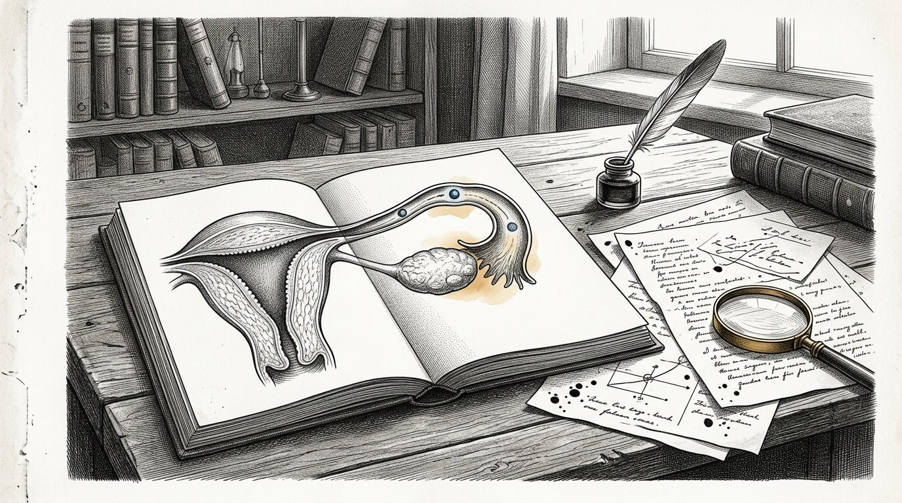
Passam-se sete dias até que um óvulo fecundado se fixe.
Sete dias durante os quais ela está a caminho e em que, tanto quanto nos é dado ver, nada acontece que mereça ser nomeado.
Nada se acrescenta. Nada é nutrido. Não há ligação à mãe e a mãe não sabe de nada.
Apenas se cria a forma.
Nunca vi isto com os meus próprios olhos e também nunca o verei. Sei-o através dos livros e digo-o, porque, de resto, neste livro está quase tudo o que eu própria observei.
Ainda assim, escrevo-o, e faço-o por esta razão.
Vi cem vezes na clínica pessoas a ficarem impacientes durante uma fase em que nada acontece. Querem que entre alguma coisa. Querem alimentar, falar, ensinar, tocar.
E a primeira semana de uma pessoa é uma semana em que nada entra e em que o único trabalho consiste em erguer a forma onde mais tarde algo poderá entrar.
Quem já nessa semana quer dar alguma coisa, dá-a a algo que ainda não existe.
Assim é no princípio e assim é em todas as fases seguintes.
Anthea escreve:Para que a vida possa começar, a forma tem de existir. Nessa semana nada acontece, e esse nada é o trabalho.
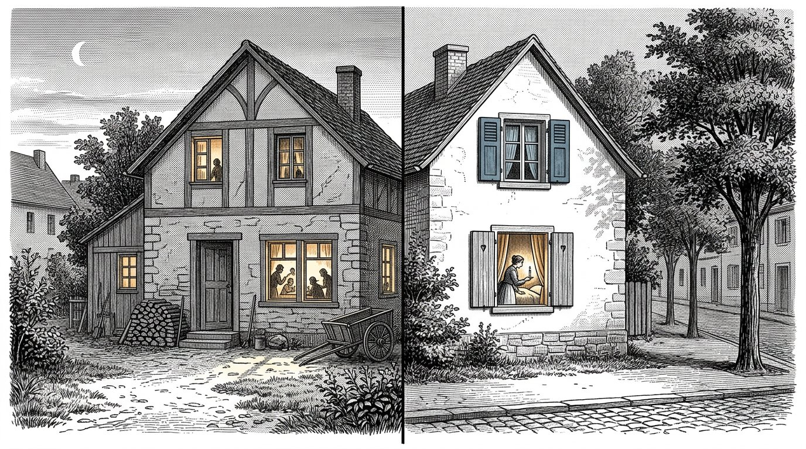
Havia duas casas na mesma rua onde, no mesmo ano, se esperava uma criança.
Numa das casas, tudo foi preparado. Veio um berço, vieram roupas e cobertores, e tudo ficou engomado num armário.
Na outra casa também chegou tudo isso e, além disso, aconteceu algo que ninguém notou.
A mulher dessa casa começara a comer a horas certas. Deitava-se quando escurecia e levantava-se quando clareava, e já fazia isso havia quatro meses antes de a criança nascer.
Não o fazia pela criança. Fazia-o porque dormia mal e porque alguém lhe dissera que ajudava.
Acompanhei aquelas duas crianças até aos dois anos.
A segunda criança dormia. A primeira, não.
Não sei se foi por isso. Havia ainda dez outras diferenças entre aquelas duas casas e não medi nenhuma delas.
Mas, desde então, disse o mesmo a todas as mulheres que quiseram ouvir, e digo-o também aqui:
O ritmo de uma casa tem de existir antes de a criança chegar.
Um relógio que só começa a contar quando há algo para medir não é um relógio. É uma reacção.
Anthea escreve:Estabelece o ritmo antes de a criança chegar. Um relógio que só começa a contar quando há algo para medir não é um relógio.

Em cada casa há alguém que decide o que entra.
Geralmente não é ninguém em particular e nunca é combinado. É a pessoa que diz: aqui não fazemos isso, ou: deixem entrar, ou: aquele homem não entra.
Vi o que acontece quando essa pessoa não existe.
Havia uma família onde todos eram bem-vindos e onde tudo entrava. Vinham vizinhos, vinham histórias, veio um rádio e, mais tarde, apareceu todo o tipo de coisas num ecrã, e nunca havia ninguém que dissesse que alguma coisa não podia entrar.
Isso era louvado. Chamavam-lhe uma casa aberta.
As crianças daquela casa cresceram com tudo.
O que não tiveram foi uma única pessoa que, de vez em quando, impedisse alguma coisa de entrar.
Não se trata de impedir muitas coisas. Naquela casa, quase nada era realmente prejudicial.
Trata-se de uma criança viver a experiência de haver alguém à porta.
Quem nunca passou por isso também não constrói uma porta para si.
Aos trinta anos, está aberto a tudo o que passa por ele, chama a isso abertura de espírito e nunca o escolheu.
Anthea escreve:Tem de haver alguém à porta antes de alguma coisa chegar à porta. Uma criança que nunca viu isso não constrói uma porta para si.
Parte III
Parte 3

Em que se olha de forma plana e em redor e se estabelecem as funções vitais — respirar, manter-se quente, evitar o perigo — e em que se revela que uma camada só está pronta quando aguenta.

Olha para um peixe.
Os olhos estão de lado na cabeça. Vê à esquerda e vê à direita e vê praticamente tudo à sua volta ao mesmo tempo. Quase não há lugar de onde nos possamos aproximar sem que ele veja.
Parece melhor do que aquilo que nós temos, e num aspecto é-o de facto.
Mas vê de forma plana.
Os dois olhos não trabalham em conjunto. Cada um olha para o seu lado e não há nele nada que sobreponha as duas imagens. Por isso, não sabe a que distância está uma coisa. Sabe que há algo, e mais ou menos onde está, e nada mais.
Um lagarto tem o mesmo.
É a isso que chamo neste livro as duas dimensões. Não uma ideia — uma maneira de olhar. Em redor, plano, tudo ao mesmo tempo, sem profundidade.
Para aquilo que esses animais têm de fazer, é suficiente. Fugir não precisa de profundidade. Fugir só precisa de saber que há algo.
Uma criança no útero também não precisa dessa profundidade, porque não há nada que esteja longe.
Tudo o que existe toca-lhe.
Anthea escreve:Duas dimensões não são uma ideia, mas uma maneira de olhar: em redor, plano, tudo ao mesmo tempo, sem profundidade. Para fugir, é suficiente.

Uma criança pratica a respiração durante meses antes de haver ar.
Faz o movimento no líquido em que se encontra. Não aspira nada, porque não há nada para aspirar. Faz apenas o movimento, milhares de vezes, sem que isso conduza a nada.
Senti-o com a mão numa mulher no sétimo mês. Uma série de pequenos impulsos, quatro ou cinco seguidos, e depois silêncio.
Ela pensou que eram soluços, e de certa forma eram, mas ao mesmo tempo eram outra coisa.
É um ser a ensaiar uma acção para a qual o mundo ainda não existe.
Quando a criança nasce, tem de respirar no espaço de poucos segundos. Não há tempo para aprender. Não há uma primeira tentativa.
Tudo o que então tem de acontecer foi praticado durante sete meses, no escuro.
Um réptil vive em duas direcções. Avança e desloca-se para o lado, e mantém-se à superfície sobre a qual jaz. Não trepa nem salta e não tem noção do que está acima.
Também uma criança jaz assim durante esses meses. Volta-se e desliza, mas não há cima nem baixo, porque flutua.
É por isso que neste livro chamo ao réptil a primeira camada e não a mais baixa.
Há numa pessoa uma parte que se põe em ordem a si própria sem que alguém esteja presente e sem que haja alguma coisa a aprender com outra pessoa.
Essa parte não precisa de amor, nem de palavras, nem de encorajamento.
Precisa de sossego e de tempo, e é a única parte de uma pessoa que está completa antes de ela nascer.
Anthea escreve:A primeira camada ensaia no escuro uma acção para a qual o mundo ainda não existe. Essa camada não precisa de amor. Precisa de sossego.

Uma criança no útero tem sempre a mesma temperatura.
Não é ela que a regula. Recebe o calor da mãe e não tem de fazer nada para o obter, e assim é durante sete meses.
E depois nasce, e no espaço de uma hora tem de começar a fazê-lo sozinha.
É a transição mais difícil da vida humana e dura aproximadamente um dia.
Vi crianças que conseguiram fazê-lo de imediato e crianças que não conseguiram, e a diferença não está no amor que receberam.
É por isso que encostamos um recém-nascido à mãe e não o deitamos numa alcofa. Não por ternura. Porque um corpo mantém outro corpo quente enquanto esse corpo aprende a fazê-lo sozinho.
O que aprendi com isso não se aplica apenas ao calor.
Há coisas que uma pessoa primeiro recebe de outra e que depois tem de começar a produzir sozinha.
Se tiver de as produzir demasiado cedo, algo corre mal. Se as receber de outra pessoa durante demasiado tempo, nunca aprende.
No caso do calor, é uma questão de horas e nós conseguimos vê-lo.
Em tudo o que vem depois, leva anos e nós não o vemos.
Anthea escreve:Aquilo que uma pessoa primeiro recebe de outra, tem depois de começar a produzi-lo sozinha. Demasiado cedo, algo corre mal; demasiado tarde, nunca aprende.

Caiu uma portinhola na clínica e uma mulher muito grávida assustou-se.
E, sob a mão dela, a criança assustou-se também.
Ela sentiu-o, olhou para mim e disse: "Ele ouviu isso."
Eu disse então que ele não tinha ouvido como nós ouvimos, e é isso que se costuma dizer, e agora já não sei se era verdade.
O que aconteceu, em todo o caso, foi isto: surgiu um estímulo forte e seguiu-se um recuo, sem nada entre ambos.
Nenhum pensamento. Nenhuma ponderação. Nenhuma pergunta sobre se era perigoso.
Essa é a terceira função vital e é a mais importante das três, porque respirar e manter-se quente conservam um ser vivo e evitar o perigo mantém-no inteiro.
Conheci na minha vida três pessoas em quem esse reflexo não funcionava bem.
Não eram corajosas. A coragem é outra coisa; é ter medo e, apesar disso, avançar. Elas não tinham medo.
As três morreram cedo e não posso dizer de nenhuma delas que tenha sido por causa disso.
Mas escrevo-o porque hoje em dia fazemos muitos esforços para não assustar as crianças.
O susto não é um dano.
O susto é a camada mais antiga que existe, e existia antes de qualquer outra coisa.
Anthea escreve:Evitar o perigo não é medo nem fraqueza. É a camada mais antiga, e existia antes de qualquer outra coisa.
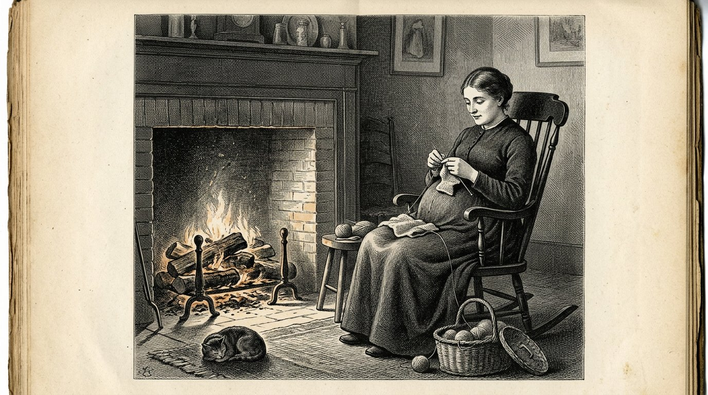
Depois de sete meses, o réptil está completo.
Tudo aquilo de que um corpo precisa para se governar a si próprio está então presente. Respirar, o calor, assustar-se. Uma criança que nasça no sétimo mês pode continuar viva, e isso não é um milagre, mas o resultado normal de uma camada que está pronta.
E, no entanto, uma criança só nasce normalmente dois meses mais tarde.
Durante muito tempo, isso intrigou-me, e não cheguei a nenhuma conclusão.
O que vi foi isto. Nesses dois meses, nada de novo se acrescenta. Não se estabelece nenhuma função nova. A criança ganha peso, a pele engrossa e os pulmões tornam-se mais amplos, e isso é quase tudo.
A camada está completa e torna-se sólida.
Vi nas crianças que nasceram demasiado cedo qual é a diferença. Eram capazes de tudo. Eram-no durante menos tempo.
Foi desta forma que comecei a compreendê-lo, e digo desde já que são palavras minhas, não de um médico:
uma camada não está pronta quando funciona. Está pronta quando aguenta.
Quem encerra uma fase no momento em que vê que ela funciona, encerra-a dois meses cedo demais.
Anthea escreve:Uma camada não está pronta quando funciona. Está pronta quando aguenta.
Parte IV
Parte 4

Em que se acrescenta a terceira direcção e o sentimento se solidifica, não como regra, mas como evidência vivida — e em que a quarta direcção ainda é mantida afastada durante sete anos.

Há um dia em que uma criança se ergue, puxando-se.
Esteve deitada, sentou-se, arrastou-se pelo chão — e então agarra a borda de uma cadeira e ergue-se, fica de pé e cai.
O que se acrescenta nesse dia é a terceira direcção.
Ela começou antes, e começou nos olhos.
Um mamífero tem os olhos voltados para a frente. Vê menos do que o peixe — há todo um mundo atrás dele que não vê e para o qual tem de se virar.
O que recebe em troca é que os dois olhos vêem a mesma coisa a partir de dois lugares, e há nele algo que sobrepõe essas duas imagens.
Daí nasce a profundidade.
A partir desse momento, não existe apenas algo, mas também a distância a que está. Há o alcançar. Há o demasiado longe. Há o quase.
Um recém-nascido ainda não tem isso. Passam-se meses até os seus olhos aprenderem a trabalhar em conjunto, e isso acontece espontaneamente, sem que ninguém veja.
Enquanto uma criança está no chão, vive como vivia o réptil: para a frente e para os lados. Não há um acima a que possa chegar por si.
A partir do momento em que fica de pé, há altura. Há algo demasiado longe para agarrar. Há uma mesa onde está pousada alguma coisa. Há quedas.
E com isso surge outra coisa, que começa no mesmo instante e que ninguém relaciona com a terceira direcção.
A criança olha para trás.
Puxa-se para cima, fica de pé e depois vira a cabeça para ver se alguém viu.
Vi isso em muitas crianças, e acontece sempre na mesma semana em que começam a ficar de pé.
O mamífero não se desprende do espaço. Vem com o espaço.
Quem tem altura pode cair. Quem pode cair precisa de alguém que olhe.
Anthea escreve:Com a terceira direcção vem o mamífero. Quem tem altura pode cair, e quem pode cair olha para trás para ver se alguém está a olhar.
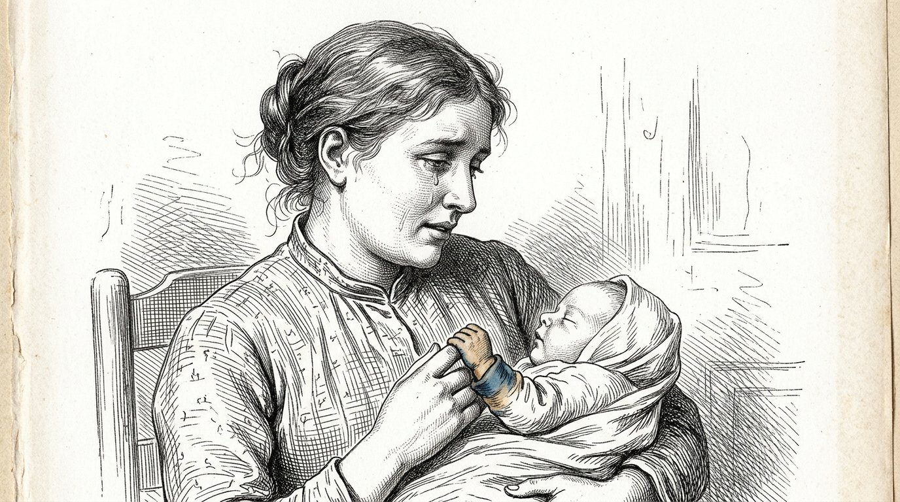
Eu vi nascer cento e dezanove crianças em quarenta e seis anos.
Um recém-nascido faz quatro coisas na primeira semana. Respira, bebe, dorme e grita.
É tudo. Parece pouco, e é quase tudo o que fica inscrito numa vida humana.
Porque o que acontece nessa semana não é a criança aprender alguma coisa. É o corpo determinar em que espécie de mundo veio parar.
Alguém vem quando eu grito, ou não.
Não é mais do que isso. É uma pergunta, e a resposta não vem em palavras, mas na rapidez com que alguém aparece.
Vi crianças para quem vinha sempre alguém, crianças para quem vinha alguém na maioria das vezes, e crianças em que isso variava.
A variação é o pior. Não o sei por ter lido num livro; sei-o de observar, e digo desde já que não o medi e, portanto, não tenho a certeza.
Mas vi-o demasiadas vezes para não o escrever.
Uma criança suporta pouca coisa. Uma criança não suporta o imprevisível.
Anthea escreve:Na primeira semana, um ser humano não aprende nada. Na primeira semana fica estabelecido se o mundo responde.
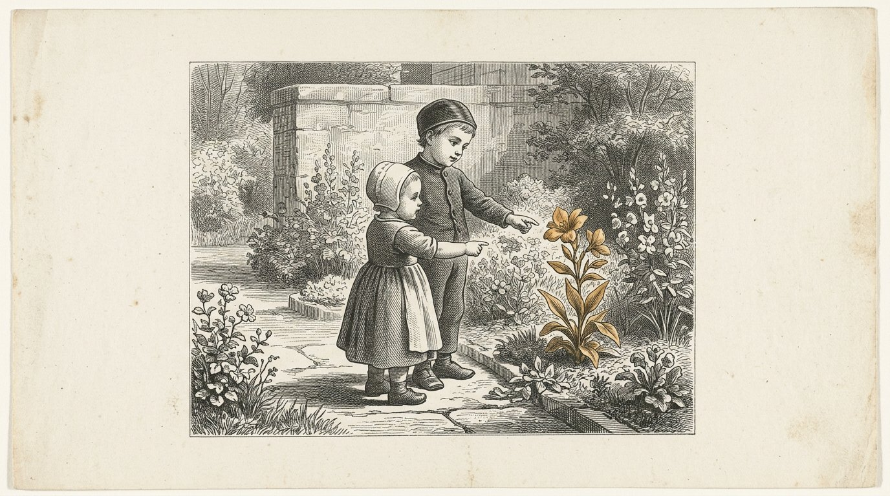
Havia uma criança que tinha cinco cuidadores. Não era por indiferença. A mãe trabalhava, o pai trabalhava, e havia duas avós e uma vizinha, e todos gostavam de o fazer.
A criança estava bem. Nunca era deixada sozinha, nada lhe faltava, e havia sempre alguém que vinha.
Acompanhei essa criança porque veio à nossa clínica por causa de um problema no ouvido.
Só reparei no que me chamou a atenção passado um ano.
Quando a criança ficava inquieta, a mãe dizia: estás cansada. Uma das avós dizia: tens fome. A outra dizia: estás agitada. A vizinha dizia: queres ir lá fora.
As cinco gostavam dela, e as cinco tinham razão às vezes.
Mas a criança recebeu cinco nomes para um só sentimento no corpo.
Uma criança não sabe espontaneamente o que é a fome. Sente qualquer coisa incómoda. Só aprende o que é quando alguém diz repetidamente a mesma coisa perante o mesmo sentimento.
Esta criança não aprendeu isso. Começou a adivinhar.
Tornou-se uma criança simpática e uma boa aluna, e nunca foi tratada por nada.
Aos dezanove anos disse-me, na mesma clínica, na mesma cadeira: "Nunca sei o que sinto."
Anthea escreve:Uma criança não aprende o que é a fome através da fome. Aprende-o porque a mesma pessoa diz sempre a mesma palavra perante o mesmo sentimento.

Uma criança de cinco meses não compreende uma palavra.
Lê um rosto mais depressa do que o senhor é capaz de o compor.
Verifiquei isso uma centena de vezes, porque a princípio não acreditei. Sentei-me junto de uma mãe e pedi-lhe que dissesse qualquer coisa amável enquanto pensava em algo desagradável.
A criança sabia. Todas as vezes.
Não por ser inteligente. Porque não tem mais nada. Não tem palavras, portanto só tem o rosto, e olha para esse rosto como o senhor olha para a previsão do tempo quando tem de sair para o mar.
É por isso que não resulta fazer cara alegre a um bebé quando não se está alegre.
O que resulta, e isto é o estranho, é estar simplesmente presente enquanto não se está alegre.
Tive uma mãe cujo marido morreu quando a criança tinha três meses. Ela não conseguia estar alegre e já não fazia esforço para parecer alegre.
Estava simplesmente ali. Todos os dias, durante horas, triste e presente.
Essa criança ficou bem.
Uma criança suporta a tristeza que existe. Não suporta um rosto que diz algo diferente do que sente, porque então o mundo deixa de fazer sentido, e ela ainda não pode perguntar porquê.
Anthea escreve:Não finja. A criança lê-o antes de o senhor conseguir falar.

Há um dia em que uma criança olha para si, depois para outra coisa, e volta a olhar para si para ver o que acha daquilo.
Isso é novo. No mês anterior ainda não conseguia fazê-lo.
A partir desse momento, a criança já não se ocupa apenas do que acontece, mas também daquilo que o senhor acha do que acontece.
É o princípio de tudo o que mais tarde se chamará sentimento, e é também o princípio de tudo o que mais tarde correrá mal.
Porque, a partir de agora, a criança assume isso.
Se tem medo de cães, dentro de três anos a criança terá medo de cães, e o senhor nunca lhe falou de cães.
Pude acompanhar isso em quatro famílias, porque estive com elas tempo suficiente.
Não passa pelas palavras. Passa por aquele instante em que a criança volta a olhar para o seu rosto e vê o que lá está.
Por isso, este é o período mais difícil de toda a vida para se ser educador.
Não há nada a fazer. Só há algo a ser.
Anthea escreve:Assim que a criança volta a olhar para ver o que acha daquilo, transmite o que é, não o que diz.

Havia um cão no porto que todas as tardes, às quatro menos dez, estava junto da escola.
Dizia-se que sabia ler o relógio, o que é um disparate, mas lá estava todos os dias, e nunca chegava atrasado.
Uma vez, prestei atenção ao que fazia antes de partir.
Estava deitado junto das redes. A certa altura, levantou-se e foi-se embora.
Nada tinha mudado no porto. Não havia sino, não havia ninguém a partir, não havia nada para ver.
Sabia-o no corpo.
E, no entanto, aquele animal não consegue fazer planos.
Se na quarta-feira quisesse fazê-lo compreender que na quinta-feira a escola estaria fechada, seria impossível. Não difícil. Impossível.
Na quinta-feira foi até lá, ficou diante da porta fechada e, na sexta-feira seguinte, voltou a ir.
Essa é a diferença, e é uma diferença maior do que parece.
Um ritmo no corpo não é tempo. É um reflexo que regressa.
O tempo é outra coisa. É saber que amanhã será diferente de hoje e fazer já alguma coisa com isso.
Um mamífero não consegue fazê-lo, e uma criança de quatro anos também não.
Anthea escreve:Um ritmo no corpo não é tempo. É um reflexo que regressa. O tempo é saber que amanhã será diferente.

Há uma palavra à qual nunca me habituei na clínica: logo.
Uma mãe diz a uma criança de quatro anos: logo.
Diz isso com boa intenção. Quer dizer: não agora, mas há-de acontecer.
A criança não ouve o que ela quer dizer, porque, para ouvir o que ela quer dizer, teria de conseguir imaginar um amanhã, e ainda não consegue.
O que a criança ouve é não.
E, porque ouve não quando a mãe quer dizer sim, há qualquer coisa que não bate certo, e a criança não consegue dizer o quê.
Vi isso acontecer uma centena de vezes e uma centena de vezes não disse nada, porque o que há-de uma pessoa dizer?
O que vi, isso sim, foi o que acontece com as pessoas que fazem de outra maneira.
Não dizem logo. Dizem: primeiro isto, depois aquilo. E fazem primeiro uma coisa diante da criança e depois a outra.
Assim, a criança não tem nada que transpor. Só tem de olhar.
Isso custa mais tempo ao pai ou à mãe. Esse é o preço todo.
Inventámos essa palavra para não pagar esse preço.
Anthea escreve:Uma criança de quatro anos não ouve uma promessa na palavra logo. Ouve não. Diga: primeiro isto, depois aquilo, e faça-o diante dela.
Parte V
Parte 5

Em que as quatro colunas não são ensinadas, mas vividas; em que é assente a camada inferior, que depois já não se abre; e em que se torna claro que um progenitor não consegue fazê-lo sozinho — porque um progenitor põe-se de lado e outra criança de seis anos não se põe de lado.

Eu vi o que se segue três vezes, e foi essa a razão por que comecei a escrever este livro.
Chegam à clínica pessoas que conseguem fazer tudo. São inteligentes, diligentes, não são más.
E há nelas, bem no fundo, qualquer coisa que não está certa, e nada do que fazemos consegue chegar-lhe.
Podemos falar com elas e compreendem tudo o que dizemos. Conseguem repeti-lo. Concordam connosco.
E isso não muda.
Demorei muito tempo a aceitar que há qualquer coisa a que não se chega com palavras.
A camada superior de uma pessoa muda numa conversa. A camada intermédia muda num ano ou dez.
A camada inferior é a camada que se forma nos primeiros sete anos, e depois já não muda. Nem falando, nem estudando, nem querendo.
Não escrevo isto para chamar desesperado a ninguém. Uma pessoa com uma base oblíqua pode ter uma vida boa e feliz, e conheci muitas.
Escrevo-o porque significa que os primeiros sete anos não são apenas uma das fases.
São a única fase em que se pode chegar à camada inferior.
Anthea escreve:A camada superior muda numa conversa. A camada inferior muda em sete anos, e depois nunca mais.

Eu ouvi certa vez um lavrador dizer que se prepara um campo uma vez na vida e depois se trabalha nele duzentas vezes.
Com uma criança é assim.
Nos primeiros sete anos prepara-se. Depois trabalha-se.
O que entra nesses sete anos não é conhecimento. O conhecimento vem mais tarde e vem com facilidade.
O que entra são quatro coisas, e chamo-lhes como comecei a chamar-lhes na clínica.
A primeira é: vem alguém quando eu chamo.
A segunda é: aquilo que se diz corresponde ao que acontece.
A terceira é: posso partir qualquer coisa e continuo a ser bem-vindo.
A quarta é: há alguém que me considera digno de lhe dar tempo, mesmo que disso não resulte nada.
São estas as quatro colunas, mas tal como uma criança de três anos as vive. A criança não conhece as palavras e nunca as conhecerá desta maneira.
Sabe apenas se era verdade.
Anthea escreve:As quatro colunas não são ensinadas. São vividas, ou não, nos primeiros sete anos.

Uma criança de quatro anos partiu um copo.
Há três maneiras de isto acabar, e vi as três centenas de vezes.
A primeira é a criança ser insultada. Aprende então que um erro é perigoso e começa a esconder os erros. Essa criança ainda esconderá erros aos trinta anos.
A segunda é não acontecer nada e a mãe apanhar os cacos e continuar. A criança aprende então que um erro não é nada. Aos trinta anos, essa criança deixará coisas desarrumadas e não dará por isso.
A terceira é a mãe dizer: o copo partiu-se, arrumamo-lo juntos, cuidado com os dedos.
Então acontece qualquer coisa que não acontece nos outros dois casos.
A criança aprende que um erro tem uma consequência e não um castigo, que a consequência pode ser suportada e que depois tudo volta a ficar bem.
Esse é todo o segredo deste livro, e cabe num único gesto doméstico.
Ouvi pais chamarem a isto: ser rígido. Não é ser rígido. Ser rígido é a primeira maneira.
É deixar a criança com a consequência.
Anthea escreve:O castigo ensina a esconder. O nada ensina a indiferença. A consequência ensina a suportar.

Veio à clínica uma mãe jovem que tinha lido tudo. Tinha lido três livros e conhecia os esquemas.
O filho chorava e ela olhava para o relógio.
O livro dizia que uma criança pode chorar vinte minutos depois de mamar, que depois adormece sozinha, e isso é verdade, porque é mesmo o que acontece.
Ela fazia tudo bem, segundo o livro.
Durante três meses não disse nada, porque não me cabia a mim.
No quarto mês perguntou-me ela própria o que eu achava, e então disse-lho.
Disse-lhe: «Está a olhar para o relógio. Olhe para a criança.»
Ela disse que o livro tinha sido escrito por alguém que percebia do assunto.
Era verdade. Também lho disse.
Depois perguntei-lhe se o livro conhecia o filho dela.
Ela começou a chorar e eu continuei sentada, sem dizer nada, porque não havia nada a dizer. Durante quatro meses, fizera o que uma pessoa sensata lhe tinha recomendado.
Há duas espécies de saber. Há o saber do que é válido em geral, e isso é verdadeiro saber e vale muito.
E há o saber de quem está à nossa frente.
O primeiro pode ler-se. O segundo exige que se olhe.
Anthea escreve:O livro é verdade. O livro não conhece o seu filho.

Atrás do porto havia uma rua onde as crianças brincavam e onde não estava nenhum adulto.
Não foi uma decisão. Era assim.
Ali aconteciam coisas que não aconteciam em casa. Empurravam-se. Excluíam-se uns aos outros. Tiravam-se coisas e chorava-se por isso.
Normalmente durava meia hora e depois acabava, e ninguém tinha mediado.
Mais tarde vi o que aquela rua fazia.
Em casa, um progenitor adapta-se. Não pode evitá-lo e é também bom que o faça. Amortece. Põe-se de lado um passo, para a criança poder passar.
Outra criança de seis anos não faz isso. Não se põe de lado.
É ali que uma criança aprende onde acaba ela própria.
Não sei como se há de imitar isso em casa e não acredito que seja possível.
A rua já não existe. Agora passam carros, as crianças estão dentro de casa e, quando se veem, isso foi combinado por duas mães que acertaram os horários.
Nessa altura não há empurrões.
Anthea escreve:Um progenitor põe-se de lado. Outra criança de seis anos não se põe de lado. É ali que a criança aprende onde acaba ela própria.

Havia um rapaz de sete anos internado na nossa clínica com um braço partido, que não falava.
Não por teimosia. Tinha aprendido que aquilo que dizia era verificado e, por isso, preferia não dizer nada.
Havia um cão no recinto. Não pertencia especialmente a ninguém.
O cão deitou-se junto dele, e o rapaz pousou a mão sã sobre o dorso do animal; assim ficaram durante uma hora.
Depois ouvi-o falar com o cão. Não muito, nem de forma bonita, mas falava.
Um animal não pergunta se conseguimos fundamentá-lo.
Sente sem palavras, reage sem explicações, aceita ou recusa e não se envergonha de nada.
Uma criança que está junto de um animal percebe que há qualquer coisa dentro dela que não é feita de linguagem, e que essa qualquer coisa também existe noutros seres vivos.
Não se pode dizer isso a uma criança.
Tem de haver um cão.
Anthea escreve:Um animal sente sem linguagem e recusa sem vergonha. É assim que uma criança percebe que o seu próprio sentimento não é feito de palavras.

Na aula de sábado, as crianças receberam um pedaço de terra. Não um pedaço para cada uma; um só para todas, atrás da casa junto ao cais, aproximadamente do tamanho de um quarto.
Trabalhou-se nele durante nove anos, sempre com crianças diferentes.
Experimentaram todo o tipo de coisas. Houve um ano em que não nasceu nada. Houve outro em que nasceu demais e tudo apodreceu.
O que as crianças aprenderam ali não está escrito em caderno nenhum.
Sabem a que cheira quando o vento muda. Sabem que começa na terceira semana de Março, mesmo que o calendário diga outra coisa. Sabem que uma planta que desponta depressa demais, na maioria das vezes, não vinga.
Aos trinta anos, ouvi uma delas dizer que, sempre que toma uma decisão, pensa em qualquer coisa que despontou depressa demais.
Já não sabia de onde lhe vinha aquilo.
A natureza não mente, não lisonjeia e não se adapta à criança. Faz o que faz.
Para uma criança, não há interlocutor mais honesto, nem nenhum que exija tanta paciência.
Anthea escreve:A natureza não lisonjeia nem se adapta. Uma criança que acompanha o mesmo pedaço de terra durante anos aprende uma medida que não está escrita em caderno nenhum.
Parte VI
Parte 6

Em que o entendimento se abre e tudo entra, desde que o sentimento subjacente esteja solidificado e não seja explicado cedo demais.

Depois dos sete anos, surge algo que antes não existia, e não é uma direcção no espaço.
A criança pode, de repente, avançar.
Não andar — isso já conseguia. Avançar no tempo. Pode pensar num dia que ainda não existe e fazer já alguma coisa por ele.
Vi isso nitidamente uma vez.
Havia um rapaz de sete anos que fez um barco de madeira, e de manhã não o pôs na água porque nessa tarde ia levantar-se vento.
No ano anterior, tê-lo-ia posto imediatamente na água e tê-lo-ia perdido.
Ninguém lhe tinha falado do vento.
Essa é a quarta direcção, e é a primeira que não tem que ver com o corpo.
A partir desse momento, tudo aquilo que mantivemos afastado durante sete anos pode entrar. O relógio. A semana. O calendário. Primeiro fazer o que mais tarde compensa. Poupar. Esperar.
Agora isso entra facilmente, porque há algo onde o colocar.
Quem o introduz mais cedo, coloca-o sobre o nada.
Depois terá uma criança que sabe ler o relógio e que, por dentro, continua sem saber que o amanhã existe, e ninguém vê essa diferença, porque a criança diz as coisas certas.
Anthea escreve:O tempo é a primeira direcção que não tem que ver com o corpo. Surge depois dos sete, e surge facilmente, desde que haja então algo onde o colocar.
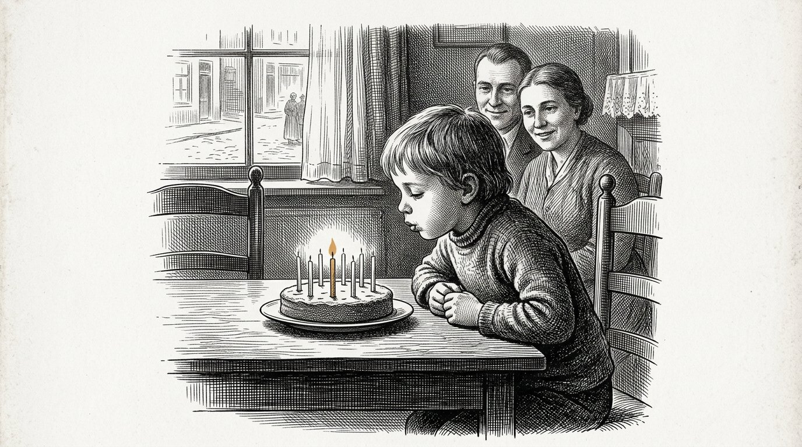
Acontece algo por volta dos sete anos, e acontece depressa.
A criança pode, de repente, raciocinar. Pode pensar em se-então. Pode aplicar uma regra a um caso que nunca viu.
É esta a idade em que se começa a escola em quase todos os países, e isso não é coincidência; descobriram-no em toda a parte, separadamente.
O que agora entra, entra facilmente. Cálculo, leitura, línguas, música. Tudo.
Mas há algo que raramente se diz.
Entra na camada que está por cima.
Se a camada de baixo estiver torta, a criança torna-se um bom aluno com uma base torta, e ninguém dá por isso, porque as notas são boas.
Vi isso muitas vezes e nunca pude fazer nada a esse respeito, porque uma criança com boas notas não recebe ajuda.
Isso vem ao de cima quando a criança tem dezoito anos, ou vinte e cinco, ou quarenta.
Na maioria das vezes, quarenta.
Anthea escreve:A partir dos sete anos, a criança aprende tudo. O que aprende cai no chão que já existe.

Havia duas pessoas que contavam histórias às crianças.
Uma contava a história e depois ficava calada.
A outra contava a história e depois perguntava: e o que significa esta história para ti?
Ambas eram boas pessoas e a segunda esforçava-se mais.
Sentei-me com ambas e olhei para as crianças, não para quem contava a história.
Com a primeira, as crianças ficavam sentadas por um instante depois do fim. Algumas olhavam para o vazio. Depois continuavam com o que estavam a fazer.
Com a segunda, levantavam-se imediatamente mãos.
A diferença está nisto. Uma história actua numa camada que não usa palavras. Deixa um padrão sobre a forma como as coisas acabam, e esse padrão afunda-se e fica ali.
Quando se pergunta imediatamente o que significa, traz-se o padrão para cima antes de ele ter afundado.
Então as crianças têm uma conversa bonita e a história desaparece.
Uma vez disse isso à segunda contadora de histórias e ela zangou-se, e eu compreendo, porque se esforçava mais do que a primeira.
Anthea escreve:Conte a história e fique calado. Aquilo que traz imediatamente à superfície nunca chegou a afundar.
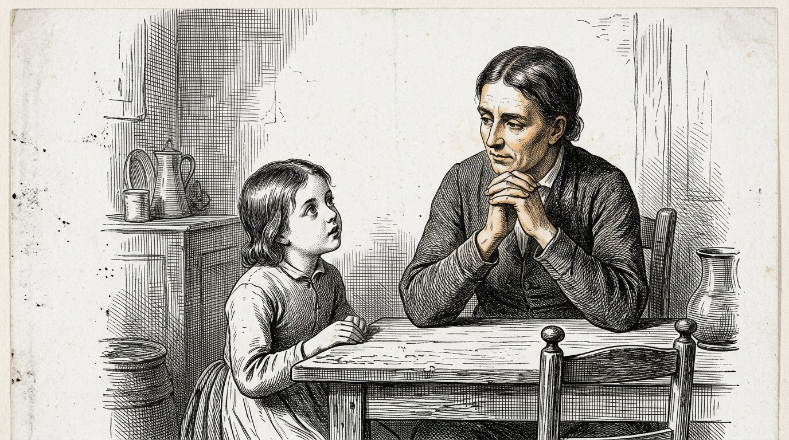
Uma criança de cinco anos pergunta porquê cem vezes por dia.
Diz-se aos pais que devem responder a essas perguntas, e geralmente é um bom conselho.
Mas conheci um pai que fazia as coisas de outra maneira, e vi essa criança crescer, por isso registo-o.
Respondia a cerca de metade. À outra metade dizia: "Não sei. Como poderíamos descobrir?"
É uma resposta desagradável para uma criança de cinco anos, e a criança também se zangava regularmente por causa disso.
Mas essa criança começou a fazer perguntas de outra maneira.
Passado algum tempo, começou a dizer por si própria: "Acho que é assim, porque vi que..."
Começou a fazer isso aos seis anos.
As crianças a quem tudo era respondido continuavam, aos doze anos, a perguntar porquê, e continuavam a esperar que houvesse alguém que soubesse.
Há uma diferença entre uma criança que sabe e uma criança que consegue descobrir, e não é verdade que a primeira conduza automaticamente à segunda.
Na maioria das vezes, não conduz.
Anthea escreve:Responda a metade. Na outra metade, pergunte como podem descobrir juntos.

Uma nota diz quão boa foi a resposta.
Não diz nada sobre a forma como se chegou à resposta.
Duas crianças tiram um oito. Uma pensou e investigou. A outra adivinhou — e adivinhou bem.
Tiram a mesma nota e ambas aprendem alguma coisa, e aquilo que a segunda aprende é o mais perigoso que existe.
Na aula de sábado, experimentei outra coisa e não sei se foi correcto.
Dei duas notas. Uma para a resposta e outra para a forma como tinham chegado a ela.
Essa segunda nota podia ser mais alta do que a primeira. Uma criança que tinha errado, mas procurado bem, recebia um quatro e um nove.
As crianças perceberam isso mais depressa do que os pais.
Os pais olhavam para a primeira nota.
Ao fim de meio ano, as crianças começaram a perguntar pela segunda.
Anthea escreve:Dê duas notas. Uma para a resposta e outra para o caminho até ela.
Parte VII
Parte 7

Em que se descrevem a quinta, a sexta e a sétima direcção — tamanho, valor e número — e em que se revela que a escolarização não as ensina, mas as elimina.
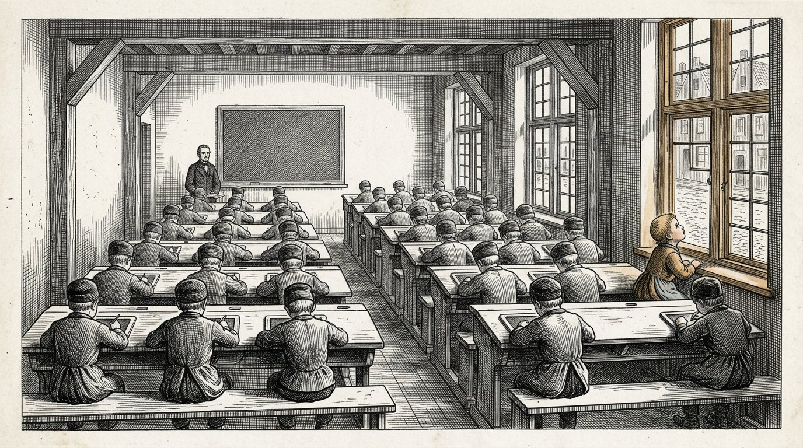
Havia um rapaz na escola junto ao cais que, numa segunda-feira, perdeu o avô e, nessa mesma semana, faltou a um teste.
Por ter faltado ao teste, recebeu uma anotação.
Por ter perdido o avô, recebeu uma palavra amável do professor à porta.
Não digo que o professor tenha procedido mal. Não havia mais nada que pudesse fazer.
O que escrevo é aquilo que o rapaz aprendeu com isso, e é diferente daquilo que o professor quis dizer.
Aprendeu que há uma única medida pela qual as coisas são avaliadas, e que o avô não cabe nela.
Numa escola, todas as coisas são reduzidas à mesma medida. Um teste perdido, uma conta mal feita, um livro esquecido, uma zanga no recreio e um avô morto passam os cinco pelo mesmo guiché e saem os cinco de lá como uma anotação ou como nenhuma anotação.
Assim, uma criança não aprende quão grande é uma coisa.
E quem não aprende quão grande é uma coisa, aos quarenta anos não sabe quais das suas preocupações são realmente suas.
Fica acordado por causa de um e-mail e dorme durante um divórcio.
Anthea escreve:Na escola, um livro esquecido e um avô morto passam pelo mesmo guiché. Assim, uma criança nunca aprende quão grande é uma coisa.

Uma vez perguntei a uma turma de onze anos quanto tempo duram mil dias.
Sabiam fazer a conta. Os dezasseis.
Dividiram por trezentos e sessenta e cinco e chegaram a quase três anos, e estava certo.
Depois perguntei o que tinham feito três anos antes.
Fez-se silêncio, e depois vieram respostas de toda a espécie: eu estava noutra turma, a minha irmã ainda não tinha nascido, ainda morávamos junto ao porto.
E nesse momento vi aquilo acontecer a dois deles.
Ergueram os olhos. Qualquer coisa do número tinha passado para o corpo deles.
Os outros catorze tinham dado uma resposta certa e não tinham sentido nada.
Tamanho não é calcular quão grande é uma coisa. Tamanho é saber quão grande é uma coisa.
Ensinamos muito bem às crianças a primeira coisa. Quase nada fazemos quanto à segunda, e a segunda é a única das duas que leva a algum lado.
Uma pessoa capaz de calcular que uma dívida dura dez anos, mas que não sabe quanto tempo são dez anos, assina essa dívida.
Anthea escreve:Calcular quão grande é uma coisa e saber quão grande é uma coisa são duas coisas diferentes. Só praticamos a primeira.

O neto de Alkion sabia avaliar um barco.
Olhava para um navio que entrava no porto e dizia quanto levava de carga, e raramente se enganava por mais de um décimo.
Não tinha aprendido aquilo em lado nenhum. Tinha crescido com isso.
Perguntei-lhe como fazia e ele não soube dizer. Disse que via pela profundidade a que o navio estava e pela forma como se encontrava em relação ao cais.
A questão é que ele tinha uma vara de medida que estava fora dele e permanecia sempre igual: o cais.
Uma criança que cresce entre coisas que não mudam adquire uma vara dessas. A torre da igreja. A largura da rua. O tempo que leva a atravessar para o outro lado.
Uma criança que cresce entre ecrãs não a adquire, porque aí tudo tem o mesmo tamanho. Um rato, um elefante e uma galáxia têm todos a mesma largura que a imagem.
Não sei o que vem em seu lugar.
Procurei durante muito tempo e não encontrei nada.
Anthea escreve:Uma criança aprende o tamanho através de algo que não muda. Num ecrã, tudo tem a mesma largura que a imagem.

Um olho é um músculo.
Quem olha para o horizonte descontraí-lo. Quem enfia uma linha numa agulha contraí-lo. Quem olha para a água e depois para a mão e depois outra vez para a água alterna cem vezes por hora.
Essa alternância não é cansativa. É para isso que um olho foi feito.
Um ecrã está sempre à mesma distância.
Durante quatro horas, o músculo permanece numa única posição. Não alterna nem descansa, porque estar parado não é descanso para um músculo que tem de alternar.
Além disso, os dois olhos não têm nada que fazer diante de um ecrã. Não há profundidade. Há uma superfície plana a meio metro, e as duas imagens que recolhem são quase iguais.
Foi precisamente assim que começou a terceira dimensão: dois olhos a verem a mesma coisa a partir de dois lugares.
Num ecrã, isso já não é necessário.
E há ainda outra coisa. Num ecrã, tudo tem o mesmo tamanho, porque tudo preenche a imagem. E num ecrã tudo é agora, porque há sempre imediatamente qualquer coisa a seguir.
Não medi isto e não sou oftalmologista.
Mas, quando conto o que um ecrã elimina, chego a três coisas: a profundidade, o tamanho e o tempo.
São essas as três de que trata este livro.
Anthea escreve:Um ecrã elimina três coisas de uma só vez: a profundidade, o tamanho e o tempo. Tudo a meio metro, tudo do mesmo tamanho, tudo agora.

No boletim há oito campos.
O que não consta: se a criança ajudou outra pessoa. Se terminou alguma coisa que ninguém lhe tinha mandado fazer. Se perseverou quando as coisas correram mal. Se foi honesta quando teria sido mais fácil não o ser.
Tudo isso é valorizado, por palavras, por pessoas boas.
Mas não consta do papel que vai para casa.
Uma criança de oito anos não é estúpida. No espaço de um ano percebe qual das duas coisas conta.
Ouvi isso uma vez, literalmente. Uma menina de nove anos disse à mãe: "Isso é muito bonito, mas não conta."
Disse-o sem tristeza. Limitou-se a constatar uma coisa.
Valor é a questão de quanto vale uma coisa, independentemente de alguém a medir.
Uma criança que aprende que valor e medição são a mesma coisa fica com isso toda a vida, e essa é a doença mais vulgar do nosso tempo.
Essas pessoas não são gananciosas nem superficiais. Simplesmente nunca aprenderam em lado nenhum a valorizar aquilo que não aparece em nenhuma lista.
Anthea escreve:Valor é aquilo que uma coisa vale, independentemente de alguém a medir. Uma criança que iguala as duas coisas fica assim toda a vida.
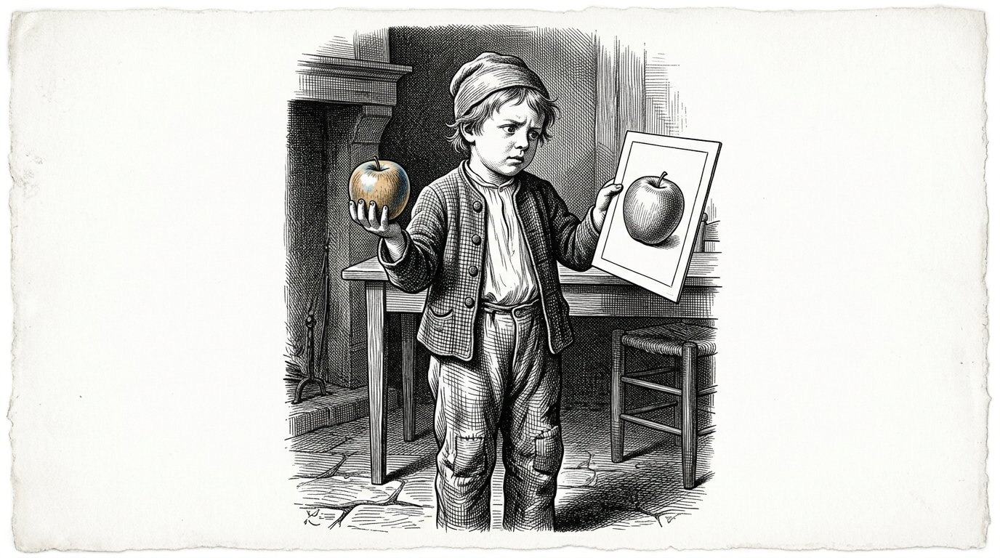
Há uma pergunta que os adultos fazem às crianças com boa intenção: isso é real ou estás a imaginá-lo?
Numa criança de cinco anos, essa pergunta causa dano.
Não porque a distinção não exista. Existe e é a distinção mais importante que há; o segundo livro inteiro é sobre isso.
Mas uma criança de cinco anos ainda não tem duas prateleiras onde possa pousar as coisas. Tem uma, e tudo está pousado nela.
Quando a obrigamos a escolher, ela não escolhe. Aprende que há qualquer coisa de errado com a prateleira.
O que funciona, e vi isso numa mãe que não o tinha aprendido com ninguém, é colocar a distinção dentro da história, em vez de a colocar dentro da criança.
Ela contou uma história e, no fim, disse: e isto é uma história.
Nada mais. Nenhuma pergunta. Nenhum teste.
A segunda prateleira foi oferecida à criança sem que alguma coisa lhe fosse alguma vez tirada.
Aos oito anos, foi ele próprio que perguntou. Perguntou: isto é uma história ou aconteceu?
E ela disse qual das duas coisas era, e nunca fez mais nada.
Anthea escreve:Coloca a distinção entre o real e o inventado dentro da história, não dentro da criança. Ofereces-lhe a segunda prateleira; não lhe tiras a primeira.

No mercado, ouvi um homem dizer ao filho que uma coisa era barata e, por isso, boa.
Na semana seguinte, ouvi outro homem dizer ao filho que uma coisa era cara e, por isso, boa.
Ambos estavam enganados e ambos estavam enganados da mesma maneira.
Os dois rapazes aprenderam que o preço diz alguma coisa sobre o valor.
Havia um terceiro homem, que era pescador e comprava corda.
Não escolheu a mais cara nem a mais barata. Pegou num pedaço, puxou-o, olhou para a forma como estava torcido e disse ao filho: olha para isto, está torcido de mais e estica.
Não mencionou o preço.
Vinte anos mais tarde, o filho teve um estaleiro.
Não digo que isso tenha acontecido por causa disso. Digo que, aos dez anos, aquele rapaz teve uma coisa nas mãos e aprendeu a sentir se prestava, sem que houvesse um número ligado a ela.
Esse é o eixo do valor, e não é ensinado porque não pode ser avaliado num teste.
Anthea escreve:Quem ensina ao filho que o preço diz alguma coisa sobre o valor dá-lhe uma medida que o enganará durante toda a vida.
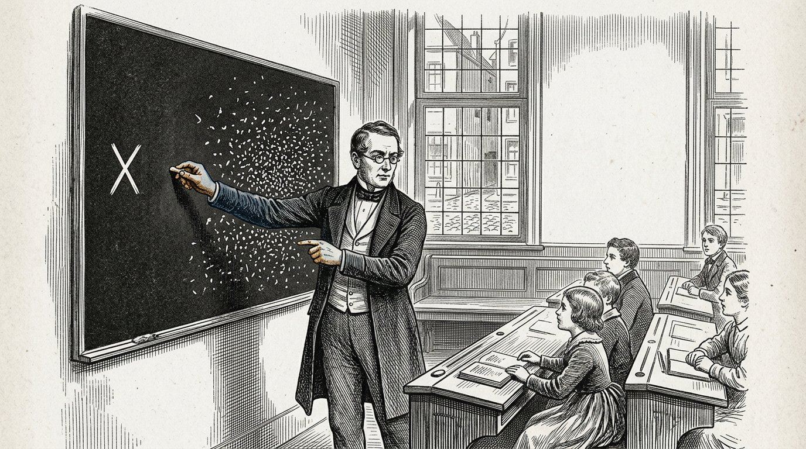
Chegou à aldeia a notícia de que, algures muito longe, tinham morrido seis mil pessoas.
Leram a notícia, disseram que era terrível e continuaram com o seu dia.
Nessa mesma semana, um rapaz da aldeia caiu de um pontão, partiu a perna e falou-se disso durante três semanas.
Não condenei isso e também não o condeno agora. O ser humano é feito assim, e eu própria não sou diferente.
Mas pensei no que isso significa.
Temos um sentimento para um. Não temos um sentimento para mil.
Perante um, sabemos exactamente o que fazer. Vamos até lá, levamos sopa, sentamo-nos ao lado dele.
Perante seis mil, não temos nada. Não há nenhuma acção que corresponda a isso.
E, como não há nenhuma acção, também não se sente nada.
Penso que esta é a mais dispendiosa das três dimensões em falta, porque tudo o que hoje corre mal, corre mal em números que nenhum ser humano consegue sentir.
Precisamos de pessoas capazes de sentir seis mil.
Não sei como se ensina isso. Sei que não tentamos.
Anthea escreve:Temos um sentimento para um e nenhum sentimento para mil. Tudo o que hoje corre mal, corre mal em números que ninguém consegue sentir.

Havia na aldeia uma mulher que dizia que o novo médico não prestava.
A razão era que a vizinha tinha sido atendida por ele e não tinha ficado curada.
Um caso.
Nesse ano tinham sido duzentos e quarenta, e os outros duzentos e trinta e nove estavam satisfeitos; ela não sabia disso e também não poderia tê-lo sabido.
Mas também não perguntou.
Este é o outro lado da mesma dimensão e é tão grave como o primeiro.
Quem não tem sentido do número não consegue sentir que um caso isolado ainda não é nada, e também não consegue sentir que mil casos são alguma coisa.
Pesa tudo com base naquilo que viu pessoalmente.
Não é estúpido. É exactamente o que faz um ser humano sem o sexto eixo.
E é a razão pela qual, numa aldeia, se pode expulsar um bom médico e manter um mau médico, sem que ninguém queira fazer mal.
Anthea escreve:Sem sentido do número, uma pessoa pesa tudo com base naquilo que viu pessoalmente. Um caso isolado torna-se uma verdade e mil casos tornam-se nada.
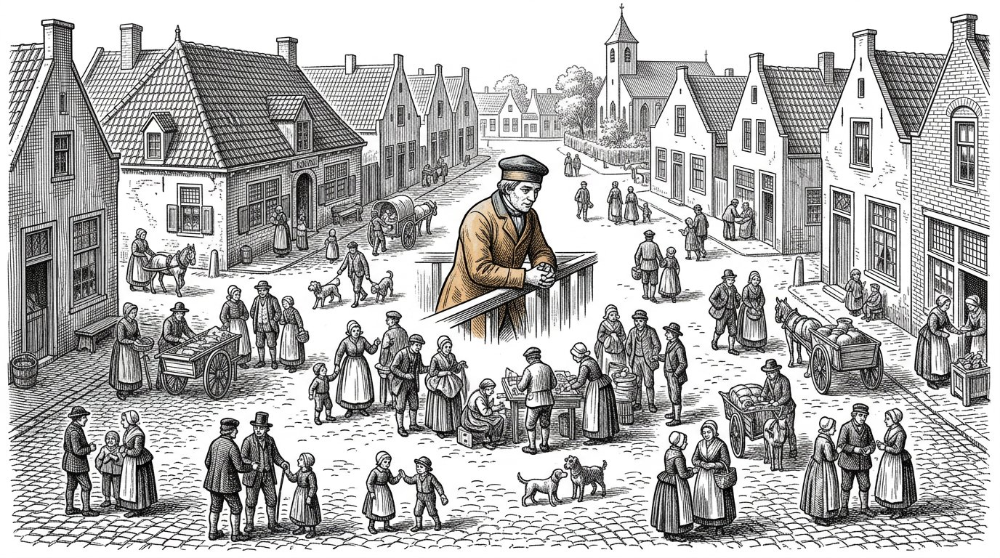
Theia perguntou-me uma vez, quando tinha dezasseis anos, por que razão as pessoas da aldeia cuidavam umas das outras numa festa das colheitas, mas não quando se tomava uma decisão sobre o interior do país.
Na altura disse uma coisa que ainda hoje penso.
Na festa das colheitas, vês essas pessoas.
Estão oitenta na praça e vês as oitenta, e sabes a que rostos pertencem.
Quando se toma uma decisão sobre o interior do país, trata-se de pessoas que não estão presentes. Vivem demasiado longe para vir e são demasiadas para serem nomeadas.
Por isso não contam, e ninguém decidiu que não contam.
Na minha vida, conheci uma única pessoa capaz de fazer isso. Foi Sofia, quando era presidente da câmara.
Em todas as reuniões, todas as vezes, dizia a mesma frase, e as pessoas achavam isso irritante:
Ainda há oitocentas pessoas que não estão aqui sentadas.
Disse-o mais de mil vezes.
É a única coisa que alguma vez vi resultar.
Anthea escreve:Quem não está sentado não conta, e ninguém decidiu isso. Só há um remédio: dizê-lo em voz alta todas as vezes.
Parte VIII
Parte 8

Onde se praticam três coisas que ninguém mede: o silêncio, o corpo e o direito de dizer que não se sabe.

Havia um rapaz de nove anos que estava a construir.
Andava ocupado com aquilo desde manhã e estava tão absorto que não levantou os olhos quando passei por ele.
Às onze horas, tocou a campainha e o professor disse que estava na hora da aritmética, e o rapaz arrumou tudo.
Fê-lo sem resmungar. Era uma criança obediente.
Vi aquilo e não disse nada, porque não era a minha turma e não era assunto meu.
Mas contei, nesse inverno, por curiosidade.
Durante onze manhãs, registei quantas vezes uma criança completamente absorvida por alguma coisa era arrancada dela pelo horário.
Acontecia, em média, quatro vezes por manhã.
Uma criança que está completamente entregue a alguma coisa está, nesse momento, a aprender da única maneira como se aprendem as coisas profundas. Os factos também podem ser aprendidos ao lado disso. Os padrões, não.
O horário existe para sustentar o dia.
Nós transformámo-lo em algo que dá ordens ao dia e, portanto, o horário tornou-se senhor precisamente do instante que deveríamos proteger.
Anthea escreve:Quando uma criança está completamente entregue a alguma coisa, desloque o horário. Não a criança.

Na aula de sábado, durante meio ano, experimentámos uma coisa que ninguém compreendia.
Começávamos pelo silêncio. Dez minutos. Sem tarefa, sem fechar os olhos, sem contar a respiração. Ficar sentados e nada mais.
As primeiras quatro semanas foram insuportáveis. As crianças mexiam-se, riam-se e olhavam umas para as outras. Dois pais perguntaram para que mandavam o filho para ali.
Na sexta semana, aconteceu qualquer coisa.
Caiu um silêncio que não vinha de mim.
O que notei depois foi que, após esses dez minutos, as crianças trabalhavam de outra maneira. Não melhor nos exercícios. De outra maneira. Olhavam mais tempo para uma coisa antes de começar.
Uma vez fiz as coisas mal e escrevo-o porque é o erro que toda a gente comete.
Havia um rapaz que perturbava e eu disse-lhe que então se sentasse em silêncio, lá ao lado.
Com isso, transformei numa só frase o silêncio em castigo.
Demorou três meses a desaparecer.
Anthea escreve:O silêncio não é uma pausa nem um castigo. É a única aula em que uma criança pode ouvir-se a si própria.
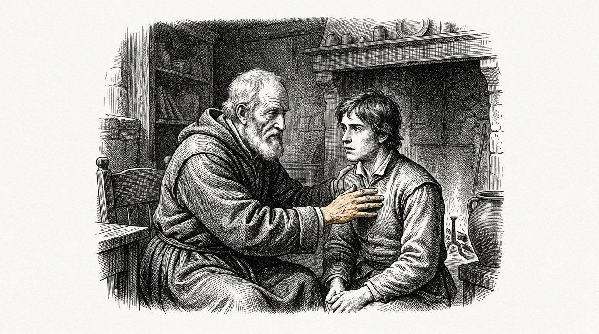
Havia uma menina de onze anos que veio ter comigo porque não queria ir a uma determinada casa.
Não conseguia dizer porquê. Dizia apenas que não se sentia bem lá.
A mãe disse o que qualquer mãe sensata diria: mal conheces aquelas pessoas, não podes simplesmente formar uma opinião sobre elas.
É verdade, é bem-intencionado e é precisamente a frase com que tudo começa.
Então perguntei outra coisa. Perguntei onde sentia aquilo.
Apontou para o esterno.
Fomos falando sobre isso e não saiu nada. Nunca saiu nada. Até hoje não sei se havia alguma coisa a acontecer naquela casa.
Também não é esse o ponto desta história.
O ponto é que, depois daquela conversa, a menina continuava a saber onde sentia aquilo.
Se a mãe tivesse tido razão — e talvez tivesse mesmo tido razão —, ela já não saberia.
Um corpo não é um veículo para uma cabeça. Dá sinais. E aquilo que assinala nem sempre está certo.
Mas uma criança que aprende que o próprio sinal não conta desliga o aparelho.
Anthea escreve:Leve a sério a mensagem do corpo. Levar a sério não é o mesmo que dar razão.

Na aula de sábado, havia um rapaz que disse uma coisa para a qual eu não tinha resposta.
Tínhamos um problema sobre um navio que percorria determinada distância em determinado número de horas, e ele disse que não era possível.
Perguntei porquê.
Ele disse: «Não sei porquê. Não está certo.»
A reacção sensata é dizer que não se pode dizer uma coisa dessas, que é preciso fundamentá-la e que não se fazem contas com um sentimento.
Foi essa a reacção que tive.
Ele calou-se e, no ano seguinte, nunca mais disse uma coisa assim.
Duas semanas depois, passou por lá um pescador que tinha visto o problema no quadro e disse que nenhum navio percorreria aquela distância naquele tempo, porque teria de avançar contra a corrente.
O problema vinha de um livro de um país sem marés.
O rapaz não tinha calculado a corrente. Vivera dezasseis anos junto a um porto.
Foi então que compreendi o que tinha feito. Não tinha rejeitado a resposta dele. Tinha rejeitado a única fonte que ele possuía, e essa fonte funcionava.
O que eu deveria ter dito está desde então escrito na minha parede:
Acredito em ti quando dizes que não está certo. Vamos descobrir de onde vem isso.
Anthea escreve:«Não sei, mas não está certo» é uma resposta válida. É o princípio de qualquer investigação que chega a algum lado.

Havia uma menina na aula de sábado que acertava em tudo. Todos os exercícios, durante três anos.
Um dia dei-lhe um problema que não podia ser resolvido. Fi-lo de propósito e digo desde já que, olhando para trás, não me orgulho disso.
Esteve ocupada com ele durante hora e meia.
Depois começou a chorar.
Não chorava porque o problema fosse difícil. Chorava porque pensava que havia alguma coisa errada com ela.
Então disse-lhe que o problema estava errado e que eu o sabia quando lho dei.
Ficou furiosa e tinha razão.
Mas três semanas depois perguntou-me se eu queria voltar a fazer aquilo, e se dessa vez não podia dizer-lhe qual era.
Fizemos isso durante um ano. Todos os sábados, seis problemas, dos quais às vezes um não podia ser resolvido.
Foi a única aluna que tive que não entra em pânico quando uma coisa não bate certo.
E foi a única que, aos treze anos, ousou dizer a um adulto: «A sua pergunta não presta.»
Anthea escreve:Dê à criança, de vez em quando, um problema impossível. Caso contrário, aprenderá que todos os problemas estão certos.

Eu escrevi no segundo livro sobre o professor que começou a dizer como sabia aquilo que sabia.
Quero escrever aqui a parte que não consta desse livro.
O primeiro ano foi terrível para ele.
As crianças deixaram de o levar a sério. Tinham aprendido que um professor sabe, e um professor que diz que não sabe é, aos olhos delas, um professor que não conhece o seu trabalho.
Dois pais foram lá queixar-se.
Esteve quase a desistir e veio ter comigo e perguntou-me se eu achava que aquilo fazia sentido.
Eu disse-lhe então que não sabia.
Ele não achou piada.
O que o manteve de pé foi uma coisa pequena. Havia um rapaz na turma que um dia disse: «Professor, não tenho a certeza disso.»
Nunca tinha ouvido aquela palavra a um aluno. Em dezasseis anos, nunca.
Demorou ainda dois anos até aquilo se tornar normal e, quando se tornou normal, já não se via, porque as crianças simplesmente o faziam.
Essa é a dificuldade deste trabalho. Quando resulta, não há nada para ver.
Anthea escreve:Demora dois anos e, quando resulta, não vê nada. Esse é o preço.
Parte IX
Parte 9
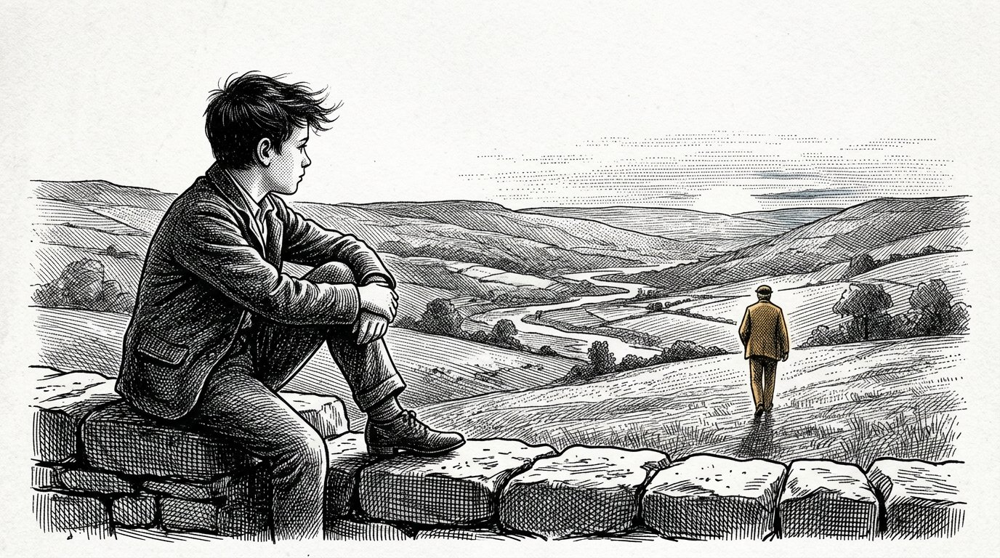
Em que se abre a capacidade de olhar para o próprio pensamento, e em que se revela que essa camada se abre perante uma colisão.

Por volta dos catorze anos, surge algo que antes não existia.
Não é que a criança se torne mais inteligente. Já o era.
É que a criança consegue olhar para o próprio pensamento enquanto pensa.
Uma criança de dez anos que está convencida de alguma coisa está convencida. Uma criança de quinze anos que está convencida de alguma coisa pode pensar ao mesmo tempo: porque é que eu acho isto, afinal.
Essa é a terceira camada e é a camada de que trata o segundo livro inteiro.
Vi isso abrir-se em muitas crianças e não acontece gradualmente. Acontece em poucos meses.
Isso torna-as ingovernáveis. Começam a questionar tudo, incluindo aquilo que não precisa de ser questionado, e fazem-no da maneira mais irritante que existe.
É isso.
É exactamente isso que tem de acontecer, e é a única vez em que acontece com facilidade, e a maioria dos adultos esmaga-o porque é incómodo.
Vi pais orgulhosos por o filho de quinze anos não ter passado por uma fase difícil.
Nunca consegui dizer-lhes isso.
Anthea escreve:A idade difícil não é algo por que tenha de passar. É a terceira camada a abrir-se.

Perguntam-me por que razão digo catorze e não doze ou dezasseis.
Não o medi. Digo-o porque foi descoberto em todo o lado onde se ensina, e de forma independente.
Entre nós, antigamente, começava-se a aprendizagem aos sete anos, aos catorze começava-se a trabalhar por conta própria e aos vinte e um tornava-se mestre.
Não foi inventado por alguém que estudasse o cérebro. Surgiu nas oficinas, através da tentativa, ao longo de centenas de anos.
Aos catorze anos, um aprendiz pode pela primeira vez executar sozinho uma tarefa e avaliar o próprio trabalho.
Aos vinte e um pode avaliar outra pessoa.
São duas coisas diferentes e há sete anos entre elas.
Dezoito não aparece neste livro. Dezoito é um número da lei e não mede nada. Foi escolhido porque era preciso um limite, não porque se tivesse observado alguma coisa.
Fico pelos sete, catorze e vinte e um, porque são os números a que o próprio ensino chegou.
Anthea escreve:Sete, catorze, vinte e um. Esses números vêm do ensino, não da lei.

Havia um rapaz em quem isso não se abriu.
Tinha quinze anos, era amável e não era estúpido. Fazia o que lhe diziam. Nunca tinha sido difícil.
A mãe orgulhava-se disso.
Vi-o na clínica por outra razão e fiz-lhe uma pergunta que eu sabia que ninguém lhe tinha feito alguma vez.
Perguntei-lhe o que achava.
Ele não sabia. Não por timidez. Nunca o tinha feito.
Conseguia dizer-me exactamente o que o pai achava, o que o mestre achava e o que as pessoas da rua achavam.
Nessa noite fiquei a pensar nisso e escrevi algo de que ainda hoje não me recompus.
A terceira camada não se abre por si mesma. Abre-se quando alguma coisa entra em tensão.
Se uma criança nunca viveu a experiência de duas coisas em que acredita não poderem ser ambas verdadeiras, então não há nada em que essa camada possa activar-se.
Uma criança precisa de colisões.
Mantemo-las longe dele porque o amamos.
Anthea escreve:A terceira camada abre-se perante uma colisão. Quem poupa o filho a todas as colisões mantém a camada fechada.

Havia um mestre na escola junto ao cais que não sabia muito.
Está escrito de forma dura, e é verdade. Conhecia medianamente o seu ofício. Havia dois que o conheciam melhor.
E as crianças da sua turma saíam pela porta diferentes.
Levei anos a perceber a que se devia, porque não era às suas aulas que isso se devia.
O que ele fazia era isto. Quando entrava numa sala de aula, olhava primeiro em redor antes de dizer alguma coisa.
Percebia quando havia algo. Não por o ter ouvido — via-o na maneira como elas estavam sentadas.
E, quando percebia, fazia alguma coisa a esse respeito, mesmo que isso lhe custasse a aula.
Os dois que conheciam melhor o seu ofício começavam a aula assim que entravam.
Uma criança não aprende a maior parte das coisas daquilo que uma pessoa diz.
Aprende daquilo que essa pessoa é, dentro da sala, durante as horas em que a criança ali está.
Por isso, a pergunta ao contratar um mestre não é apenas o que ele sabe.
É também: esta pessoa lê uma sala.
Anthea escreve:Uma criança não aprende, em primeiro lugar, com aquilo que o mestre sabe. Aprende com quem está na sala.
Parte X
Parte 10
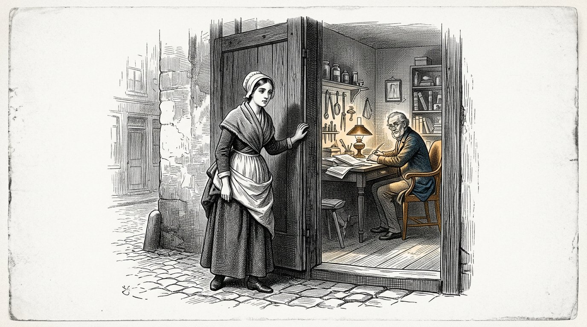
Em que o entendimento toma o comando, mas apenas na medida em que existe por baixo uma base de sentimentos suficiente para o sustentar — e em que se descreve o que acontece quando ela não existe.
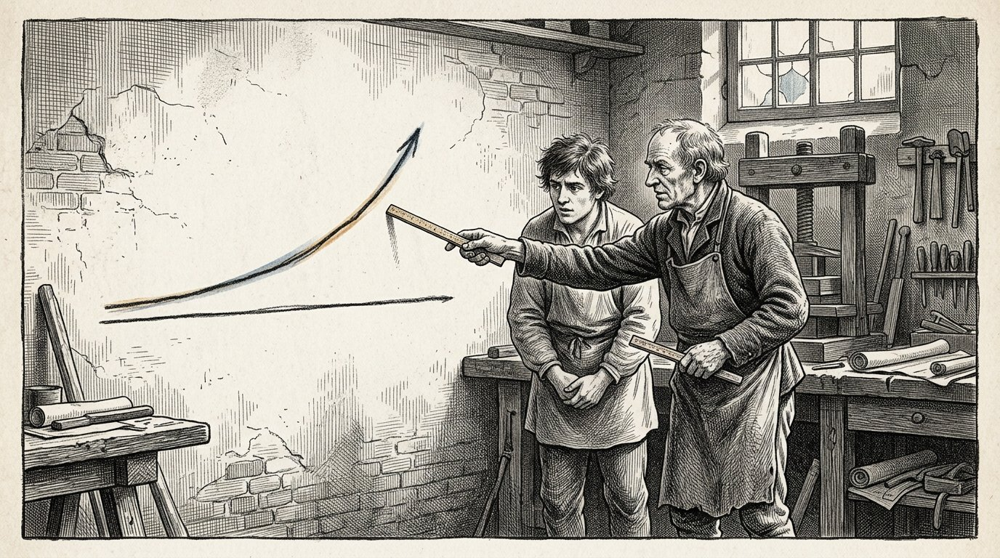
Há duas linhas que atravessam a vida de uma pessoa.
A primeira é a linha do saber fazer. Vai do nascimento até cerca dos catorze anos e, depois, está concluída. Um rapaz de catorze anos sabe andar, falar, fazer contas, pensar, trabalhar.
A segunda é a linha do juízo. Começa onde a primeira termina e vai até cerca dos vinte e um anos.
Julgar não é saber alguma coisa. Julgar é saber quanto vale um caso antes de se estar dentro dele.
Não se aprende isso por ouvi-lo dizer. É a única coisa, em todo este livro, que tenho a certeza de não poder ser transmitida por palavras.
Aprende-se estando errado durante sete anos em coisas que têm alguma importância.
Alguma. Não muita.
Um rapaz que, aos dezasseis anos, aluga um barco, se afasta demasiado e regressa com dificuldade, aprendeu uma coisa que não se pode explicar.
Um rapaz a quem aos dezasseis anos não é permitido fazer nada aprende isso aos trinta, e então com um barco que é seu e uma família em casa.
Anthea escreve:A primeira linha vai até aos catorze anos e diz respeito ao saber fazer. A segunda vai até aos vinte e um e diz respeito ao juízo.

Há uma medida para um erro, e essa medida é todo o ofício.
Um erro deve custar o bastante para doer e tão pouco que possa ser reparado.
É tudo.
Se não custar nada, a criança não aprende nada. Se custar demasiado, aprende o medo, e o medo não é juízo.
O difícil é que essa medida muda de ano para ano e de criança para criança.
Para uma criança de seis anos, um copo partido é a medida certa. Para um rapaz de dezasseis, um copo partido não é nada e uma perna partida é demasiado.
O educador tem apenas uma tarefa nesses sete anos, e é uma tarefa pela qual ninguém alguma vez o felicita.
Tem de manter os erros na medida certa.
Não os eliminar. Mantê-los na medida certa.
Isso significa que se deve assistir, de mãos quietas, a algo que corre mal e que se sabia de antemão que iria correr mal, e estar pronto para o que vem depois.
Tive de fazer isso quatro vezes com a minha própria família e três vezes não fui capaz de suportá-lo.
Anthea escreve:Um erro deve custar o bastante para doer e tão pouco que possa ser reparado.

Um rapaz de dezoito anos queria abrir uma oficina e o plano não prestava.
Eu vi-o. O pai dele viu-o. O ferreiro viu-o.
Dissemos-lho os três e explicámo-lo bem, com os números incluídos.
Mesmo assim, ele avançou.
Correu mal como tínhamos dito, mas não no ponto em que o tínhamos dito. Correu mal por causa de algo em que nenhum dos três tinha pensado.
E no ponto em que tínhamos a certeza de que iria correr mal, não correu, porque entretanto ele encontrara uma solução que nós desconhecíamos.
Perdeu dois anos e não foi à falência.
Aos vinte e quatro anos recomeçou, e essa oficina ainda existe.
Uma vez perguntei-lhe se faria tudo de novo.
Disse que não o faria, que também não teria querido passar sem isso, e que não sabia como essas duas frases podiam coexistir.
Eu também não sei.
Mas sei que as três pessoas que sabiam mais tinham razão num ponto e estavam erradas noutro, e que não podíamos dizer antecipadamente qual era qual.
Anthea escreve:Quem sabe melhor de antemão tem, na maioria das vezes, metade da razão. Qual metade, isso vê-se pelo caminho.

Um pai veio ter comigo com uma pergunta a que eu não podia responder.
Tinha lido tudo. Fazia tudo o que está escrito neste livro e fazia-o meticulosamente.
E disse: "Não funciona. O meu filho não me conta nada."
Fui sentar-me com eles duas vezes, em casa deles, porque de outro modo não teria conseguido ver.
Fazia tudo bem. Fazia as perguntas certas, deixava espaços de silêncio, não interrompia.
E não estava lá.
Não sei como dizê-lo de outra maneira. Estava sentado na cadeira e executava os gestos, mas por trás dos olhos não havia ninguém em casa.
O filho de dez anos percebeu-o num instante, como qualquer criança percebe.
Disse-lho, e foi a conversa mais desagradável desse ano.
Perguntou-me então o que devia fazer, e eu disse que não sabia e que, fosse como fosse, não era algo que devesse fazer ao filho.
É a frase mais dura de todo este livro e, ainda assim, incluo-a.
Não pode dar ao seu filho aquilo que já não tem em si.
O trabalho não começa na criança.
Anthea escreve:Não pode dar a uma criança aquilo que já não tem em si. O trabalho não começa na criança.

Um homem de quarenta anos veio à clínica e não tinha nada.
Viera por uma coisa pequena e estávamos à espera de um resultado, por isso estivemos uma hora a conversar.
Tinha estudado. Tinha um bom emprego. Tinha uma família.
E fez-me as mesmas perguntas que me fazem os rapazes de dezassete anos.
Perguntou-me o que devia fazer. Não em pequeno, mas em grande. Perguntou como se houvesse alguém que soubesse.
Era vinte e três anos mais velho do que aqueles rapazes e encontrava-se exactamente no mesmo lugar.
Depois fui perguntar por ele a pessoas que o conheciam, o que não devia ter feito, mas fiz.
Tinha tido uma boa vida em casa. Muito boa. Nunca nada tinha corrido mal.
Frequentara uma boa escola, tivera boas notas e depois fizera uma boa formação.
Tudo o que alguma vez fizera tinha corrido bem.
Prestei atenção a isso nesse ano e continuei a prestar-lhe atenção desde então, e encontrei dez que não diferiam uns dos outros senão na profissão.
Todos tinham falhado demasiado poucas vezes.
Anthea escreve:Quem até aos trinta anos nunca falhou, aos quarenta encontra-se onde um rapaz de dezassete anos se encontra.

Escrevo isto aos setenta e dois anos e vi o tempo mudar.
Quando eu era jovem, aos catorze anos um rapaz embarcava e seguia com os outros, e o mar não julgava com brandura, mas julgava logo.
Agora um rapaz estuda até aos vinte e três anos e ninguém o julga senão por uma nota.
Uma nota vem depois, não dói e pode ser corrigida estudando mais.
Isso não é um erro na medida certa. Não é erro nenhum.
Não sou contra o estudo. Eu própria estudei e ele deu-me tudo o que tenho.
Mas vejo que dos sete aos vinte e três anos prolongámos a primeira linha, a linha do saber fazer, e retirámos a segunda linha desses mesmos anos.
Fizemos do estudo uma coisa tão grande que não restou espaço para fazer realmente alguma coisa mal.
A segunda linha começa então apenas depois dos estudos. Aos vinte e cinco anos.
E, como começa então com uma família, uma dívida e um emprego, já não há erro algum que esteja na medida certa.
Nessa altura, todos os erros são demasiado grandes.
Por isso deixam de os cometer, e assim a linha não chega, e uma pessoa chega aos cinquenta sem nunca ter tido um juízo próprio.
Anthea escreve:Preenchemos de estudo os anos em que uma pessoa devia aprender a falhar.

Havia uma mulher que aos cinquenta anos perdeu tudo. O marido foi-se embora, a casa teve de ser vendida, e ela ficou sozinha a enfrentar tudo.
Até então, fora uma mulher de quem se dizia que não era capaz de decidir nada sozinha.
E era verdade. Perguntava tudo a outra pessoa.
No primeiro ano fez quase tudo mal. Vendeu aquilo que devia ter conservado e conservou aquilo que devia ter vendido.
No segundo ano fez metade das coisas mal.
No quinto ano, outros começaram a perguntar-lhe o que pensava.
Uma vez ouvi-a dizer isto, e é a frase mais dura que ouvi em toda a minha vida:
"Aos cinquenta anos comecei a fazer aquilo que devia ter feito aos quinze. Ainda é possível. Só custa mais trinta anos e diz respeito a coisas que já não podem ser reparadas."
Escrevo isto como a única parte consoladora deste capítulo.
Ainda é possível.
É apenas caro.
Anthea escreve:Ainda é possível aos cinquenta anos. Nessa altura custa tudo aquilo que aos quinze não teria custado.

Eu não tive filhos.
Há uma razão, e essa razão não diz respeito a ninguém, mas isso significa que escrevo este livro a partir do lado de fora e não de dentro da questão.
Vi nascer cento e dezanove crianças e não criei nenhuma.
Mas houve três que passaram muito tempo comigo e que agora são adultos, e deles sei isto:
com a primeira fiz tudo o que está escrito neste livro e correu bem.
Com a segunda fiz tudo o que está escrito neste livro e não correu bem.
Com a terceira fiz a maior parte das coisas mal, porque eu própria estava baralhada, e essa criança é a que melhor se saiu das três.
Não consegui explicar isso e tentei.
Escrevo-o aqui porque não quero deixá-lo de fora e porque no segundo livro escrevi eu própria que se devem mencionar os casos que não resultam.
Seria um livro melhor sem este capítulo.
Mas não seria verdadeiro.
Anthea escreve:Acompanhei três crianças. Este livro estava certo em duas. Numa, não. Não sei porquê.
Parte XI
Parte 11

Em que Anthea não acusa os pais, porque não houve geração que o soubesse e porque desapareceram os lugares onde antigamente isso era posto em ordem fora de casa.

Uma mãe veio ter comigo, envergonhada.
Tinha dado um ecrã ao filho porque já não conseguia mais, e dizia-o como se tivesse roubado alguma coisa.
Disse então uma coisa que ainda hoje mantenho.
Disse: a sua mãe também não lhe ensinou quão longe fica uma coisa.
Ela olhou para mim.
Expliquei então o que queria dizer, e demorou muito tempo, e no fundo era isto.
Falamos destas coisas como se tivesse havido uma geração que soubesse e que o tivesse perdido. Não houve tal geração.
A mãe dela tinha trabalhado. A avó tinha trabalhado, tivera sete filhos e não tivera tempo para nenhum deles. Na aldeia de onde vinha, as crianças entravam na fábrica aos onze anos.
Nós não perdemos isto. Tivemo-lo por fases e, na maior parte do tempo, não.
O que é diferente agora não é sermos piores.
É que antigamente isso era posto em ordem fora de casa. Faziam-no a rua, e o campo, e a oficina onde um rapaz de catorze anos estava ao lado de um homem.
Esses lugares já não existem, nada veio substituí-los e, por isso, tudo recai sobre os pais.
Uma só pessoa não consegue.
Anthea escreve:Não houve uma geração que o soubesse. Antigamente, isso era posto em ordem fora de casa. Esses lugares desapareceram e agora tudo recai sobre uma só pessoa.

Eu escrevi neste livro que, nos primeiros anos, uma só pessoa tem de estar continuamente presente.
É verdade e não retiro uma palavra.
Também sei que, para a maioria das pessoas, isso não é possível.
Nesta aldeia, na minha juventude, trabalhavam os homens e, na minha velhice, trabalhavam ambos, e isso não foi uma escolha feita por ninguém. A casa ficou mais cara, a vida ficou mais cara e já não se conseguia viver com um só rendimento.
Assim, a criança acaba por ficar entregue a cinco pessoas, e eu escrevi neste livro o que isso faz, e isso permanece.
Mas recuso-me a chamar-lhe um erro desses pais.
Eles não escolheram entre o filho e um segundo rendimento. Não havia escolha.
O que penso sobre isso é o seguinte, e é a única coisa política que existe neste livro.
Quando uma sociedade torna as suas casas tão caras que ambos os pais têm de trabalhar, decidiu como os seus filhos serão criados.
Essa decisão nunca foi tomada numa reunião. Nunca se votou sobre ela.
Aconteceu como aconteceu a estrada negra.
Estava ali, e colava-se.
Anthea escreve:Quando uma sociedade torna as suas casas tão caras que ambos têm de trabalhar, decidiu como os seus filhos serão criados. Essa decisão nunca foi tomada.

Quem planta uma árvore, vê-a crescer.
Quem cria um filho, não vê nada.
Esse é o verdadeiro problema de todo este livro, e todos os conselhos que dou têm, perante ele, pouco valor.
Nos primeiros sete anos, lança uma fundação que só se tornará visível quando a criança tiver quarenta, e nessa altura você estará morto ou velho; além disso, já não será possível atribuí-la a si, porque entretanto aconteceu tanta coisa.
Não há prova alguma de que alguma vez tenha feito algo de bom.
É por isso que as pessoas educam a curto prazo. Fazem aquilo que traz sossego esta noite.
Eu própria também fiz isso e não tive filhos, portanto tive a vida facilitada.
Escrevo isto para as pessoas que, às dez da noite, já não sabem o que fazer e pensam que estão a fazê-lo mal.
Você não o vê. Também não o vai ver.
Isso não é sinal de que não esteja a resultar.
É a natureza do trabalho.
Anthea escreve:Não terá provas. Não é porque não esteja a resultar. É porque demora setenta e sete anos.
Parte XII
Parte 12

Em que a série se encerra, se relêem as catorze páginas e a chave fica pendurada no barracão.

Há um número neste livro que não posso provar e que, ainda assim, escrevo.
Sete dias. Sete meses. Sete anos. Catorze. Vinte e um.
E depois um longo silêncio, e depois setenta e sete.
Setenta e sete não é a idade em que uma pessoa aprende alguma coisa. É o tempo que passa até aquilo que uma pessoa aprendeu regressar em alguém que não a conheceu.
Consegui verificar isso através de uma única coisa, que é pesar os sacos.
A minha avó começou quando tinha trinta e um anos.
Eu assumi a tarefa sem o saber quando tinha dezassete anos.
Uma rapariga na clínica assumiu-a de mim quando tinha vinte anos e eu cinquenta e seis, e nunca me ouviu dizer porquê.
Tem agora quarenta e quatro anos e há um rapaz que a aprendeu com ela.
Da minha avó até esse rapaz vão setenta e seis anos.
Nenhum deles alguma vez ouviu alguém explicar por que se pesa.
Os quatro fizeram-no ao lado de alguém que o fazia.
Anthea escreve:Aquilo que fizer ao lado de uma criança regressará, setenta e quatro anos mais tarde, junto de alguém que não a conheceu.

Eu reli as catorze páginas que estão no início deste livro.
Escrevi-as quando tinha vinte anos e, na altura, achei-as boas.
Agora acho-as demasiado seguras de si.
Diz-se nelas que eu via cores e que isso desapareceu quando tinha catorze anos. É verdade.
Diz-se nelas que eu sei o que era. Isso não é verdade. Eu não sabia e continuo sem saber.
Não as retirei.
Acrescentei uma frase por baixo, que diz: escrevi isto quando pensava que o compreendia.
Não fiz mais nada e também não farei.
Porque, se o corrigir, ficará lá aquilo que penso agora, e daqui a vinte anos isso também já não será verdade, e então já não haverá ninguém para acrescentar alguma coisa por baixo.
Assim fica o que eu pensava aos vinte anos, com aquilo que achei disso aos setenta e dois por baixo, e a diferença entre ambos é o único ensinamento que tenho para dar neste livro.
Anthea escreve:Não corrija aquilo que pensava antigamente. Acrescente por baixo o que acha agora e deixe a diferença ficar.

Há uma rapariga que veio para a clínica quando eu tinha sessenta e oito anos.
Tinha vinte anos, não era especialmente habilidosa e não era a mais inteligente que tive.
Tinha uma coisa.
Quando não tinha a certeza de alguma coisa, dizia-o.
Não o dizia por prudência nem para se proteger. Dizia-o como se diz que está a chover.
Não tive de fazer nada com ela.
Tive-a ao meu lado durante três anos e não lhe ensinei nada que ela já não tivesse, e, quando me fui embora, dei-lhe o armário e ela começou a contar os frascos.
Nunca lhe disse porquê.
Mas pensei nisso. Ponderei explicar-lho, dizer: isto vem de uma padaria, de uma mulher que nunca conheceste.
Não o fiz.
Ela tê-lo-ia guardado e tê-lo-ia contado a outros, e então teria passado a ser uma história que se invoca, e, daí a trinta anos, seria uma frase numa prateleira.
Ela conta.
É suficiente.
Anthea escreve:Não diga de onde vem. Faça-o enquanto ela está presente.
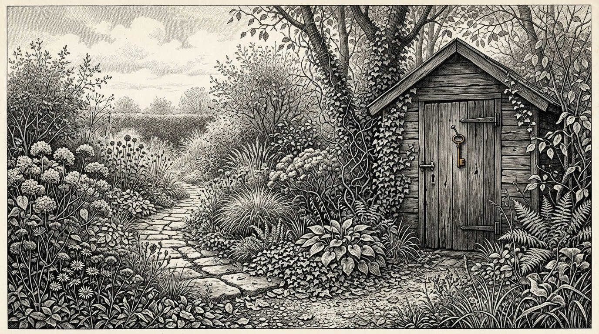
Para lá da aldeia fica o jardim de Jan.
Fui lá quatro vezes na vida e nunca fiz nada, porque não percebo de plantas.
A última vez que lá fui tinha setenta e um anos, em Outubro, e não estava ninguém.
Cresciam catorze espécies e podia comer-se onze delas.
O jardim não está disposto em filas.
Não há placa, não há vedação e em parte alguma se explica seja o que for.
Quem lá chega sem saber nada vê um jardim desordenado.
Quem lá chega e sabe vê que as plantas altas estão do lado sul, que por baixo de cada planta alta cresce algo baixo que precisa de sombra e que em parte alguma há duas iguais lado a lado.
Não foi planeado. Foi-se entranhando ao longo de quarenta e cinco anos, porque havia sempre alguém que observava o que tinha funcionado no ano anterior.
Nenhum deles o escreveu.
Fiquei ali muito tempo e pensei que devia escrevê-lo, porque sou uma pessoa que escreve as coisas e essa foi, durante toda a minha vida, a minha utilidade.
Não o fiz.
Se ficar escrito, virá alguém que o lerá e disporá o jardim tal como está escrito.
E então haverá um jardim correcto, para o qual já ninguém olhará.
Deixei a chave pendurada no barracão.
Anthea escreve:Não o escrevi. Deixei a chave pendurada.
Tenho setenta e dois anos e isto é a última coisa que escrevo.
Neste livro, disse a mesma coisa sessenta e cinco vezes. Uma criança não adopta aquilo que você diz. Adopta aquilo que você faz enquanto diz outra coisa, ou enquanto não diz nada.
Daí decorre algo desagradável. Este livro não pode ser posto em prática. Não há nele nada que você possa fazer amanhã por estar escrito aqui, porque, assim que o fizer por estar escrito aqui, não o fará de verdade, e a criança verá isso.
Pensei nisso durante muito tempo e não cheguei a conclusão alguma.
O que resta é isto: você não pode educar. Só pode ser, por si próprio, alguém, na presença de uma criança, durante tempo suficiente.
Tudo o que está neste livro é um desvio até essa única frase, e o desvio é necessário, porque, sozinha, não teria acreditado nessa única frase.
Deixei a chave pendurada no barracão.
Quem sustenta as quatro colunas é sustentado pelas quatro colunas.